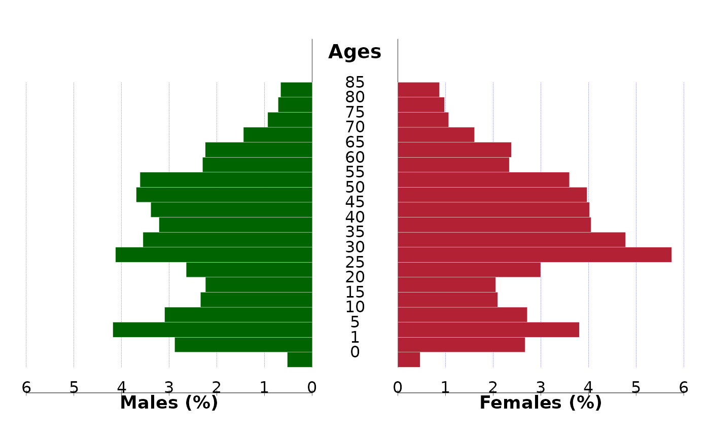

This function draws a population pyramid using either raw population numbers or proportions, displaying age groups in the center and population counts (e.g., by sex) on each side.
draw_pyramid(
data,
x,
y,
group,
facet = NULL,
facet_label = NULL,
grid = NULL,
show_value = FALSE,
show_prop = TRUE,
left_axis = NULL,
right_axis = NULL,
left_label = NULL,
right_label = NULL,
cgap = 0.3,
cstep = 1,
csize = 1,
labs = c("Males", "Ages", "Females"),
gl = 2,
cadj = 0,
cols = c("#006400", "#b32134"),
dens = c(-1, -1),
main = "",
...
)A data.frame containing the variables for age group (x),
population (y), and grouping variable (group, e.g., sex). It must
contain at least three columns: age group (x-axis labels),
population size, and grouping (e.g., "male" and "female").
A variable indicating age groups (quoted or unquoted).
A variable indicating population counts (quoted or unquoted).
A grouping variable, typically representing sex (quoted or unquoted).
Optional unquoted variable to facet the data by (e.g., year, region). A separate pyramid will be drawn for each unique value.
Optional character vector of labels for each facet.
If NULL, labels will be extracted from the unique values of facet.
Optional vector of two integers specifying the layout of the
facet grid (number of rows, number of columns). If NULL, it defaults to
a vertical stack (c(n, 1) for n facets).
Logical. If TRUE, displays the actual population values beside the bars. Default is FALSE.
Logical. If TRUE, the bars represent proportions (%) rather than absolute values. Default is TRUE.
Numeric vector of tick marks for the left side
(e.g., males). If NULL, it will be generated using pretty().
Numeric vector of tick marks for the right side (e.g.,
females). If NULL, it will use left_axis.
Character vector to customize axis labels on the left side.
If NULL, generated using formatC().
Character vector for axis labels on the right side.
Same rules as left_label.
Numeric. Width of the central gap (relative to axis length). Default is 0.3.
Integer. Step interval between age group labels. Default is 1 (every label shown).
Numeric. Scaling factor for text and lines. Default is 1.
A character vector of three labels: left side (e.g., "Males"),
center (e.g., "Ages"), and right side (e.g., "Females"). Default is
c("Males", "Ages", "Females").
Integer. Indicating the line type of the grids.
Numeric. Vertical adjustment for center age labels. Default is 0.
A character vector of two colors for the left and right bars.
Default is c("#006400", "#b32134").
A numeric vector indicating shading densities (lines per inch)
for bars. Use -1 to fill solid bars. Default is c(-1, -1).
A character string for the main plot title. Default is an empty string.
Additional graphical parameters passed to the base plot()
function.
A base R graphics pyramid plot. It does not return a value.
data("canregs")
pop <- canregs[[1]]$POP
draw_pyramid(pop, agegrp, rks, sex)
